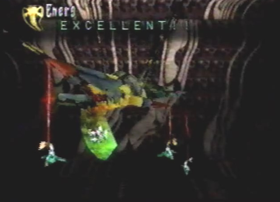
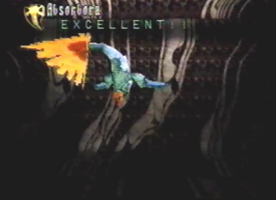
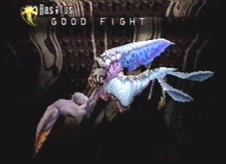

Sub-Boss: Energ  |
Asorbora  |
Strategy When we returned to the underground
dome after having acquired the Dome Gate Key, we were ambushed by
small creatures, that fell from a nest above us. Atop the nest was
another monster, waiting for its chance to attack us. We couldn't
hit the monster on top of the nest from the position we were at, but
there had to be a way, because it was coming! The small creatures
that fell down in front of us, were those half plant half animal creatures
we had previously fought while at B5F. I remembered that when I shot
their top bulbs, they shot upward and when I fired lock-on lasers,
they discharged the lasers upward as well. This was key, if we wanted
to direct our laser fire at the monster above. Doing so, took major
damage to the monster atop the nest. It soon dropped a bomb on us
to show how angry we had made it. Continuing to shoot lock-on lasers
upward at the monster, soon lead it to retreat. We let it go, because
we had to make our way to the elevator and exit this monster infested
facility! |
Divine Enemy Info for Energ
Normal/Attack Direction None Special Bomb Drop/Varies |
Length 72.0 Ln Height 72.0 Ln Width 72.0 Ln Weight 46080 Kn Dynes 400 Dn Exp Pts 564 EXP Items Macral Liquid Elixir Minor |
Boss: Basilus  |
Strategy The giant monster and the smaller one that got away, wanted revenge for us having destroyed its nest. They were out for our blood. The dragon changed into Spiritual form to prepare itself for the behemoth of a beast. As we moved to the side of the giant creature, it attacked us with a column of water. The dragon then cast his Astral Phantoms berserk attack upon himself. Small creatures surrounded my dragon with the intent to protect him from any one enemy attack. Once behind the monster, it shot an energy blast at us. The blast was deflected and the small creatures flying around the dragon, shot off toward the monster and attacked it. We could see small winged creatures that resembled the half plant half animal creatures, we had fought at the underground facility. The dragon quickly destroyed them all with his Armageddon berserk attack. Once the small creatures hanging off the back and sides of the monsters body were destroyed, the small monster atop its head, summoned for reinforcements. More of the same types of creatures landed back onto the large monsters body. The dragon used Astral Phantoms once more. While moving to the side, the small creatures launched off of the large monster and crashed into us. Luckily, we had Astral Phantoms to protect us, they deflected the oncoming attack and they themselves, crashed into the monster. Soon after, we moved directly behind the monster and found that with the small creatures absent from its body, its tail area was now vulnerable. We used two Armageddon berserk attacks, taking major damage. The smaller monster proceeded to call back reinforcements once more. The front of the giant monster seemed to be a safe spot, so we flew up front and I healed my dragon. The dragon then protected itself with Astral Phantoms again, just in case the monster attacked us once more. While behind the monster, we cast Armageddon for the final time, destroying all the small creatures, as well as the larger monster and smaller monster atop its head. Ha! It was no match for my dragon's supreme power. |
Divine Enemy Info
Normal/Attack Direction None Special Column of Water/Left and Right Solution/Back Shell Arm/Front Crash/Front |
Length 49.5 Ln Height 27.0 Ln Width 27.0 Ln Weight 6930 Kn Dynes 800 Dn Exp Pts 1440 EXP Items Elixir Maxis Macran Jewel |